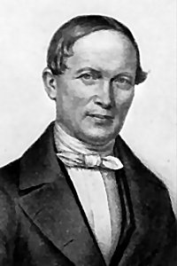

Words: Julia Abigail Fletcher Carney (b. Apr. 6, 1823;
d. Nov. 1, 1908)
Music: Gott ein Vater, by Friedrich Silcher (b. June 27,
1789; d. Aug. 26, 1860)
Links:
Wordwise Hymns (none)
The Cyber
Hymnal
Hymnary.org
Note: Julia Abigail Fletcher was a primary school teacher in Boston.
She also had written poetry since her youth, and had her verses
published from the age of fourteen. Several of her poems have been
turned into hymns. Julia married Thomas Carney, a Universalist
clergyman, and his beliefs do merit a brief comment, as many would hold
they are a departure from Christian orthodoxy.
Universalists contend that, in the end, since God is a God of love,
every human soul will be reconciled to Him and reach heaven, whatever
his or her beliefs may be. However, there are many Scriptures which
contradict this view. The Lord Jesus spoke of a narrow way that leads to
life, found by a relative few, and a broad way followed by many that
leads to destruction (Matt. 7:12-14). In the Gospels He taught far more
about hell and the danger of eternal judgment than about heaven.

Many texts, including the familiar John 3:16, speak of the need for
personal faith in God’s provision of a Saviour, if we are to be saved
(cf. Jn. 3:18, 36; Rom. 1:16; Gal. 3:26; I Jn. 5:11-12). When Paul was
asked by the Philippian jailer how he could receive salvation, the
apostle replied, “Believe on the Lord Jesus Christ” (Acts 16:30-31). He
did not say, “Believe whatever you like!”
There are many examples in our lives of how a little of
something, added or taken away, can make a big difference–especially
when that “little” addition or subtraction is repeated over and over,
many times.
The difference can be positive or negative. Think of what we eat. If
we overindulge at a single meal, the long-term effects will likely be
minimal. But if we keep it up, meal after meal, day after day, we can
put on a lot of weight. On the other hand, when we determine to diet and
lose weight, it can’t be done in a day or a week, but only little by
little.
A raindrop is tiny, and can’t do much on its own. But a shower of
rain that lasts several hours can help us a lot. This article is being
written in the early spring of the year. All around, as farmers look
forward to planting, they’re hoping for plenty of rain to give the crops
a good start. The rain not only waters plant life, promoting growth, it
humidifies and cleans the air, replenishes lakes and streams, and raises
the water table.
When we go somewhere on foot, each step only makes a small
contribution to the whole journey. But many steps, taken one by one,
will eventually get us there. Conversely, if we make a wrong turn, each
step could be taking us further and further from our destination. Or
think about the financial support given to a good cause. What we put in
the offering plate at church, or what we send as a donation to the
Cancer Society or some other organization, may only be a little. But if
many do a little, it will help a lot.
In 1952, Joseph Roach and George Mysels published a song that says,
“If everyone lit just one little candle, / What a bright world this
would be.” Whether we see those candles as picturing deeds of love and
kindness, words of hope and encouragement, or some other positive
contribution, the addition of the little each one can do adds up to a
powerful force for good.
The beliefs of Mrs. Carney’s Universalist husband aside, her
children’s hymn does not venture specifically into that teaching, and
there is a good lesson in her song: that little deeds can have a great
influence, not only on the individual’s life, but on the lives of others
around. Regarding individuals in the church, the spiritual body of
Christ, the Bible says:
“One and the same Spirit works all these things, distributing to
each one individually as He wills….God has set the members, each one
of them, in the body just as He pleased” (I Cor. 12:11, 18).
There are no unnecessary members of the body of Christ. We each have
gifts and opportunities to serve Him. And as we each do what we can,
even if it seems a small thing, it benefits all in the body.
CH-1) Little drops of water,
Little grains of sand,
Make the mighty ocean
And the pleasant land.
CH-2) And the little moments,
Humble though they be,
Make the mighty ages
Of eternity.
CH-4) So our little errors
Lead the soul away,
From the paths of virtue
Into sin to stray.
CH-5) Little seeds of mercy
Sown by youthful hands,
Grow to bless the nations
Far in heathen lands.
Questions:
1) What are some “little things” others have done that you believe have
had important results?
2) What are the qualities God is looking for that determine the value
of an act in His sight?
Links:
Wordwise Hymns (none)
The Cyber
Hymnal
Hymnary.org